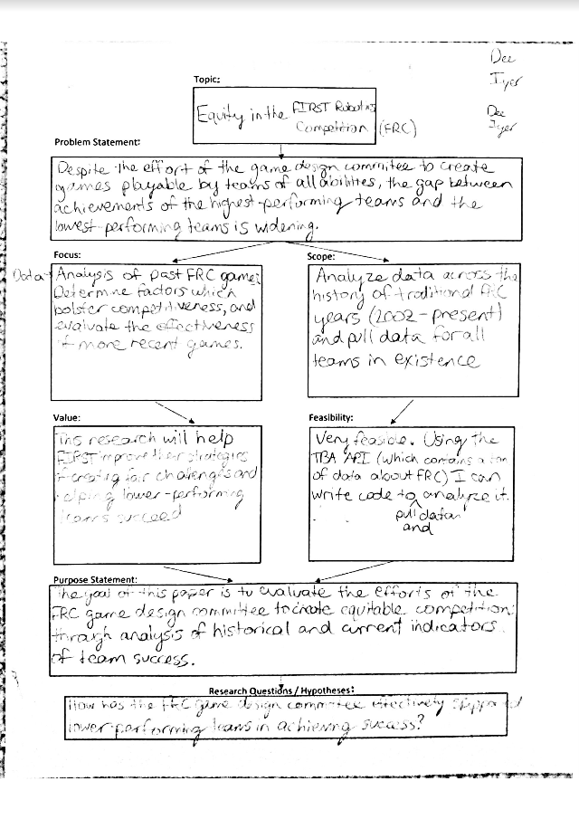

Artifact 1
Problem Statement Chart (08/26/2019)
Source - Original content
Significance
First instance where all aspects of my research were organized on paper—from the purpose of this topic to the initial ideas for methodology.
Relationship
This artifact does not necessarily take an "angle" on my research. Rather, it is the first time I consolidated my ideas on paper and began to shape the direction it would take. The problem statement written here is the result of a great deal of revision and refining with my original ideas. I also was able to establish the value of my research, which is not very apparent to an external reader.